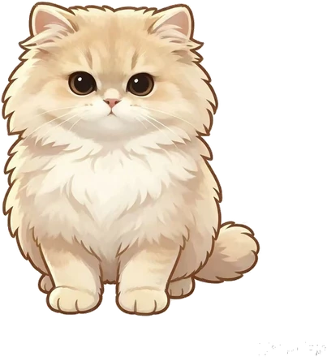
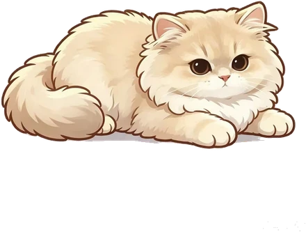

精力桌宠
情绪变化的
精力宠物
会散步、会打盹、会被你摸头。你敲键盘，它就跟着抬爪子。它还帮你看着电量：每次消耗与恢复都记在它身上，精力低了走不动，天气变了头顶会落小雨。
不需要注册账号
安装后自动启动
电脑端
版本 v2.0.0 · 2026.10.26
免费 · 无广告 · 无需注册
姿态
散步 walk

打盹 sleep
被拎起 drag
被摸头 pet
敲键盘陪打 bongo
精力清单
早晨 · 开机后
每天 17:30 · 复盘清单
本周精力手账
10/20 – 10/26 · 共 23 条留痕
- 平均精力7.2 分
- 精力区间4.5 ~ 9.0
- 完成任务12 件
- 恢复次数8 次
- 最耗时段15:00 前后
- 最有效恢复午睡 +1.8
前半周冲得猛，周四下午见底；两次午睡把节奏拉了回来。
周五 · 完整周报 · 需亲手确认
本周精力手账
10/20 – 10/26 · 共 31 条留痕
- 平均精力7.2 分
- 完成任务12 件
- 最有效恢复午睡 +1.8
AI 推荐默认值
- 午睡建议 +2
- 近 14 天用了 4 次 · 3 次调低 · 2 次吻合
- 你把午睡调低过 3 次，默认 +2.5 可能偏高。
已确认的变更留痕
- AI午睡 → +210/24
- 你咖啡 → +1.510/22
本周前半段冲得猛，周四精力见底；后半段恢复节奏稳住了，前后半周精力基本持平。
自定义猫
生成服务不可用
1 上传你家猫
点选，或把照片 / 视频拖进来
照片 1–3 张，或一段短视频 · JPG / PNG / WEBP / MP4 · 建议全身、光线好、画面里只有一只猫
照片只发送给图像大模型用于本次生成，本地服务不留存任何图片；未配置 API Key 时此功能整体不可用。不用本功能时，精力桌宠依旧零注册、零上传。
2 挑画风，起个名字，开画
画风
输出 · 统一画风、同一只猫
3 预览满意，领回桌面
安装指引（约 1 分钟）
- 安装并打开精力桌宠，右键桌面猫 →「打开皮肤文件夹」。
- 解压皮肤包，把里面的
my-cat文件夹整个放进 skins 目录。 - 把同目录下原来的
default文件夹改名为.default（点开头的文件夹会被忽略），你的猫即上位。 - 桌宠约 1 秒内自动换上（也可右键 →「重新加载皮肤」）。想换回内置精力桌宠，把
.default改回default即可。
皮肤目录 — macOS：~/Library/Application Support/CreamCat/skins/ · Windows：%APPDATA%\CreamCat\skins\